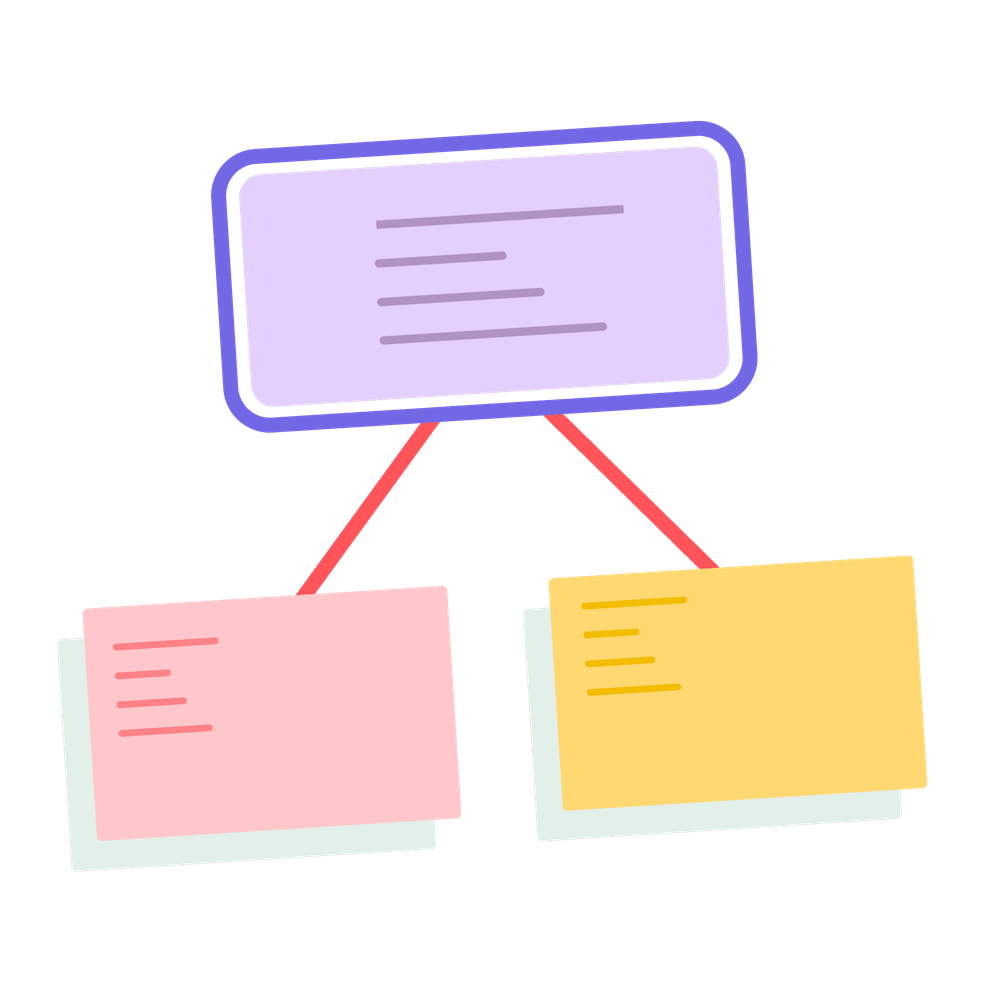

Mit der Academy erhaltet ihr im Business-Plan praxisnahe Lernmodule rund um Facilitation und wirksame Transformation.
Gemeinsam mit 9 Spaces zeigt Plan International Deutschland, wie wertebasiertes Arbeiten Orientierung gibt – nach innen wie nach außen.

Eine spielerische Methode, um mit beliebig großen Gruppen nach dem Sinn zu suchen
Visionsarbeit ist Teamarbeit! Dieses Tool hilft euch dabei, die Vergangenheit zu reviewen, um von dort aus in die Zukunft zu schauen.
Purpose, Vision, Strategie, Ziele, Taktiken, Mission. Wer soll da den Überblick behalten? Eine Abgrenzung.
Dieses Tool hilft euch dabei, die Werte zu finden, die eure Zusammenarbeit am besten beschreiben.